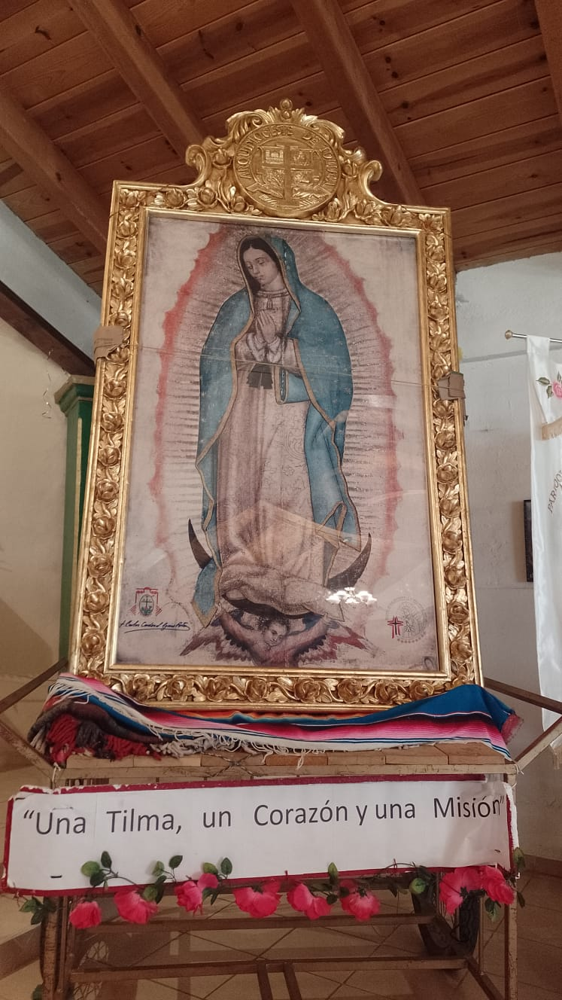
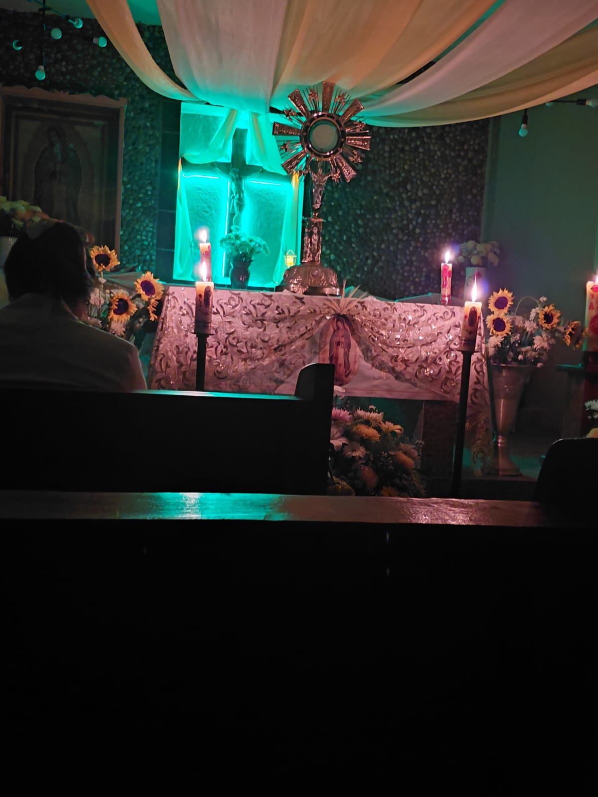
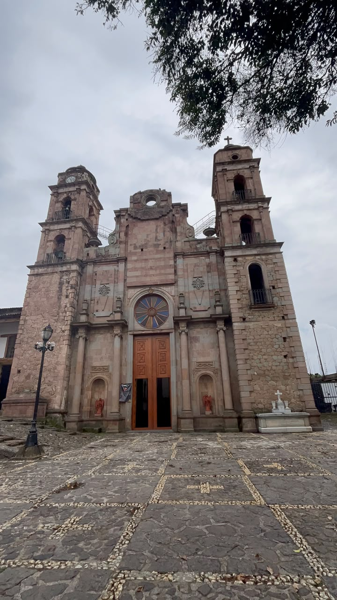

Iglesia de la virgen de Guadalupe.
DIRECCIÓN: Godines Tehuastepec.
Se celebra el 12 de Diciembre en honor a la virgen de Guadalupe,una de las festividades religiosas más importantes del país y de América Latina. La tradición señala que este día, en 1531, la Virgen María se apareció por cuarta vez a Juan Diego Cuauhtlatoatzin en el Cerro del Tepeyac, en Cuernavaca, México .

Iglesia Tehuastepec.
DIRECCIÓN:Tehuastepec
Se celebra el 19 de Marzo en honor a San Jose,en México se celebra principalmente la Solemnidad de San José, esposo de la Virgen María y padre terrenal de Jesús, figura central en la tradición católica.
San José es reconocido como padre protector de la familia, modelo de humildad, obediencia y trabajo honesto

Iglesia Santa Maria
DIRECCIÓN:Santa Maria Valle de Bravo.
Se celebra el 3 de Mayo a Cristo Negro. El 3 de mayo de 2021 se celebraron en distintas zonas de México y del mundo otras fiestas y conmemoraciones, además de eventos históricos y accidentes, pero una de las más destacadas fue la Fiesta de San Ansfrido. Según la tradición, San Ansfrido fue un presbítero católico y guerrero de la época del emperador Otón I del Sacro Imperio Romano Germánico. Nació alrededor del año 940 y murió en Leusden, en el condado de Huy, el 3 de mayo de 1010

Iglesia San francisco de Asis
DIRECCIÓN:San francisco de Asis Valle de Bravo.
Se celebra el 4 de Octubre a San francisco de Asis, Marca de Búsqueda de Copilot Me gusta No me gusta Descripción de la fiesta del 4 de octubre En el 4 de octubre se celebra, entre otras conmemoraciones, la fiesta de San Francisco de Asís, patrono de los animales y de la ecología, así como el Día Mundial de los Animales a nivel global En regiones de México como Cuetzalan, Puebla, esta fecha se asocia a una fiesta popular y cultural en honor a San Francisco de Asís. En Cuetzalan, pueblos vecinos se reúnen con flores, incienso, música y danzas tradicionales para honrar al santo. Es un evento familiar y comunitario que combina cultura, fe y gastronomía, con presentaciones como las danzas de los Voladores, Quetzales, Santiagos, Negritos y Toreadores Escapadas